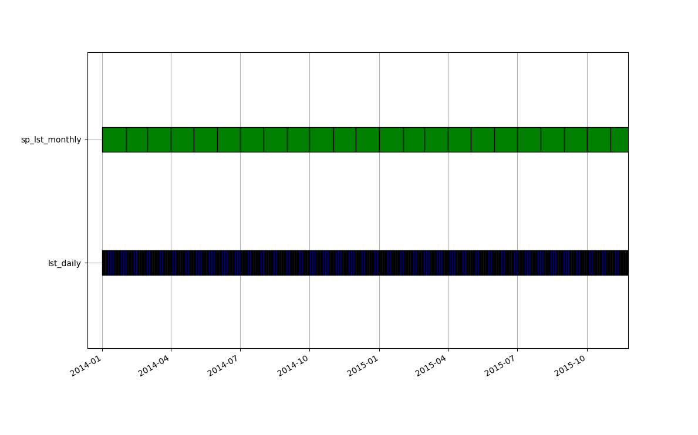

# Create 15 random points and add attr table
gs.run_command("v.random",
output="sampling_points",
npoints=15,
restrict="italy_borders_2_clip",
seed=47)
gs.run_command("v.db.addtable",
map="sampling_points",
columns="cat integer")Time series querying
GRASS GIS
Time series
raster
vector
Advanced
Python
In this sixth part of the time series tutorials, we will go through time series querying and compare and contrast the different tools available according to their inputs, outputs and other options. We will split tools into two groups according to their name to facilitate comparisons:
- temporal tools: t.rast.what, t.rast.what.aggr,t.vect.observe.strds, t.vect.what.strds and,
- vector tools: v.what.strds, v.what.strds.timestamp, v.strds.stats.
Setup
This tutorial can be run locally or in Google Colab. However, make sure you install GRASS GIS 8.4+, download the LST sample project and set up your project as explained in the first part of these time series tutorials.
Temporal tools
All the temporal tools that allow to query raster time series take either coordinates or a point vector map as inputs to sample one or various STRDS. Regarding outputs, the t.rast.* tools retrieve values to stdout, write them in plain text files or update the vector attribute table. In contrast, the t.vect.* tools output vector time series. Only two of these tools allow to do queries with temporal aggregation of the raster data either according to a fixed date or a date column in the case of t.rast.what.aggr or with temporal topology relations in the case of t.vect.what.strds.
| Tools/ options |
t.rast.what | t.rast.what.aggr | t.vect.observe.strds | t.vect.what.strds |
|---|---|---|---|---|
| Purpose | Samples a STRDS at vector points and writes the output to stdout or text file with different layouts | Samples a STRDS at vector points and returns aggregated values to stdout or in the attribute table | Samples STRDSs at points from a vector map and outputs a STVDS | Samples a STRDS at the spatio-temporal locations of a STVDS |
| input | vector (points) or coordinates and strds | vector (points) and strds | vector (points) and strds(s) | stvds (points) and strds |
| output | stdout or plain text file | vector, plain text or stdout | stvds | stvds |
| where | yes | yes | yes | |
| t_where | yes | |||
| spatial aggr | ||||
| temporal aggr | yes | yes | ||
| example | t.rast.what -n strds=A points=points output=result.txt layout=row | t.rast.what.aggr input=points strds=A date=“2015-05-01” granularity=“2 months” | t.vect.observe.strds input=points strds=A output=points_stvds vector_output=points_vector columns=A_values | t.vect.what.strds input=points strds=A column=A_values method=average |
Let’s see some examples. We will first randomly extract the centroids of 15 Italian regions in our study area and save them as a point vector map to query the raster time series afterwards.
# Display polygons and points
points = gj.Map(height = 500)
points.d_vect(map="italy_borders_2_clip", type="boundary")
points.d_vect(map="sampling_points", icon="basic/circle", size=8)
points.d_barscale()
points.show()# Save map
points.save("points.png")
# Calculate monthly LST time series
gs.run_command("t.rast.aggregate",
input="lst_daily",
output="lst_monthly",
basename="lst_monthly",
granularity="1 month",
suffix="gran",
method="average")Let’s start by using t.rast.what that will output the result in the standard output, i.e., the terminal, the GUI console or the Jupyter cell.
# Get LST monthly values for the points
gs.run_command("t.rast.what",
points="sampling_points",
strds="lst_monthly",
layout="row",
flags="n")x|y|start|end|value
4577892.8167900704|2607156.3643725100|2014-01-01 00:00:00|2014-02-01 00:00:00|-3.3495627520159
4577892.8167900704|2607156.3643725100|2014-02-01 00:00:00|2014-03-01 00:00:00|-4.49710379464276
4577892.8167900704|2607156.3643725100|2014-03-01 00:00:00|2014-04-01 00:00:00|2.75497920866939
4577892.8167900704|2607156.3643725100|2014-04-01 00:00:00|2014-05-01 00:00:00|5.8034850260417
4577892.8167900704|2607156.3643725100|2014-05-01 00:00:00|2014-06-01 00:00:00|9.28137663810487
4577892.8167900704|2607156.3643725100|2014-06-01 00:00:00|2014-07-01 00:00:00|13.8477356770834
4577892.8167900704|2607156.3643725100|2014-07-01 00:00:00|2014-08-01 00:00:00|15.1575793850807
4577892.8167900704|2607156.3643725100|2014-08-01 00:00:00|2014-09-01 00:00:00|13.6287058971774
4577892.8167900704|2607156.3643725100|2014-09-01 00:00:00|2014-10-01 00:00:00|11.6199055989584
4577892.8167900704|2607156.3643725100|2014-10-01 00:00:00|2014-11-01 00:00:00|8.36024697580648
4577892.8167900704|2607156.3643725100|2014-11-01 00:00:00|2014-12-01 00:00:00|2.6866315104167
4577892.8167900704|2607156.3643725100|2014-12-01 00:00:00|2015-01-01 00:00:00|-1.45273122479836
4577892.8167900704|2607156.3643725100|2015-01-01 00:00:00|2015-02-01 00:00:00|-3.12071761592739
Layouts
Users can then play around with the different output layouts, i.e., row, column, timerow, to find the one that better suits their data pipelines.
Now, to exemplify the use of t.rast.what.aggr imagine we did some mosquito trappings in two different dates and we need to know which was the average LST the two months before the trappings. Since the dates are different, we actually need to aggregate different days. This is done on the fly (i.e., without the need to aggregate the whole raster time series) by the extension t.rast.what.aggr. Let’s install it and add dates to our point vector map.
# Install t.rast.what.aggr extension
gs.run_command("g.extension", extension="t.rast.what.aggr")# Add a new date type column
gs.run_command("v.db.addcolumn",
map="sampling_points",
column="sampling_date date")
# Add values to the date column
gs.run_command("v.db.update",
map="sampling_points",
column="sampling_date",
value="2018-07-01")
gs.run_command("v.db.update",
map="sampling_points",
column="sampling_date",
value="2018-08-10",
where="cat >= '9'")# Inspect dates
gs.vector_db_select("sampling_points")We will use the daily time series in this case to get the aggregation period right.
# Get aggregated LST values
gs.run_command("t.rast.what.aggr",
input="sampling_points",
strds="lst_daily",
date_column="sampling_date",
granularity="2 months",
method="average",
flags="c")Let’s display the result by converting the attribute table into a Pandas DataFrame.
import pandas as pd
data = gs.parse_command("v.db.select",
map="sampling_points",
format="json")
pd.DataFrame(data['records'])
Question
What would be the result if we use the monthly time series?
Let’s demonstrate now the use of t.vect.observe.strds and t.vect.what.strds. These tools, as mentioned above, output a vector time series or stvds. Vector time series in GRASS GIS can be created either from a series of vector maps (especially if features/geometries vary in time) or from layers added to a single vector map (i.e., features are always the same, as in the case of meteorological stations).
We start with t.vect.observe.strds. It will create a new vector map with as many layers as raster maps there are in the strds we are querying and it will register these in a stvds.
gs.run_command("t.vect.observe.strds",
input="sampling_points",
strds="lst_monthly",
output="sp_lst_monthly",
vector_output="sp_lst_monthly",
columns="lst")# Check the stvds is created
gs.run_command("t.info",
input="sp_lst_monthly",
type="stvds")# Check number of layers in the vector map
gs.vector_info("sp_lst_monthly")["num_dblinks"]# Check one layer
gs.vector_db_select("sp_lst_monthly", layer=7)["values"]# Check all layers
gs.run_command("t.vect.db.select",
input="sp_lst_monthly")Let’s now compare the values obtained by querying the monthly LST time series with those resulting from aggregating the daily LST time series. They should be the same. For that we need to specify the sampling relation. The temporal tool that allows to specify sampling relations and do temporal aggregation is t.vect.what.strds. It requires a stvds as input, so we’ll use the one we just obtained above. We also specify the start relation, so all maps in the strds which start time matches the stvds will be aggregated. Let’s see this graphically before running the tool.

gs.run_command("t.vect.what.strds",
input="sp_lst_monthly",
strds="lst_daily",
column="lst_new",
method="average",
sampling="start")gs.run_command("t.vect.db.select",
input="sp_lst_monthly")As expected, results are exactly the same! So, if you are constrained by disk space for example, you don’t need to aggregate your entire strds if you only need aggregated values for a set of points.
Note
We could have also used t.sample to check which maps from lst_daily would be aggregated in the new column lst_new above.
See for yourself and try with different sampling methods:
gs.run_command("t.sample",
input="lst_daily",
sample="sp_lst_monthly",
intype="strds",
samtype="stvds",
method="start")Vector tools
The main difference between temporal and vector tools to query raster time series is that vector tools can update the attribute table of the input vector without creating more layers. Regarding inputs, both v.what.strds and v.what.strds.timestamp take a point vector map as input, while v.strds.stats takes a line or polygon vector map and performs spatial aggregation, i.e. zonal stats over the full or a part of the strds. The extension v.what.strds.timestamp, somehow similar to t.rast.what.aggr, offers the possibility of reading input points’ date information from a column in the attribute table and only performs the query for the dates that match. It also offers spatial interpolation of the four nearest pixels.
| Tools/ options |
v.what.strds | v.what.strds.timestamp | v.strds.stats |
|---|---|---|---|
| Purpose | Retrieves raster values from STRDSs using a point vector map | Matches points with timestamp in the attribute table with STRDSs based on point locations in space and time, and updates the input vector’s attribute table | Calculates zonal statistics from STRDSs and uploads values to attribute columns of a new vector map |
| input | vector (points) and strds(s) | vector (points) and strds(s) | vector (lines or polygons) and strds(s) |
| output | vector | vector | vector |
| where | yes | yes | yes |
| t_where | yes | yes | yes |
| spatial aggr | yes | ||
| temporal aggr | |||
| spatial interp | yes | ||
| example | v.what.strds -u input=points strds=A | v.what.strds.timestamp input=points timestamp_column=sampling_time column=A_at_sampling_time strds=A | v.strds.stats input=areas strds=A output=areas_new method=average |
Let’s go through the usage of the vector tools to query raster time series now. When we run v.what.strds to query strds we can either save the results in a new vector map or update the input vector attribute table by setting the u flag. In this case, we’ll create a new vector map and do a temporal selection.
# Run v.what.strds with temporal selection
gs.run_command("v.what.strds",
input="sampling_points",
strds="lst_monthly",
output="sp_lst_monthly_2014",
t_where="start_time <= '2015-01-01'")Let’s check the new vector created. It contains a new column per map in the queried strds.
data = gs.parse_command("v.db.select",
map="sp_lst_monthly_2014",
format="json")
pd.DataFrame(data['records'])The tool v.what.strds.timestamp is an extension so we need to install it first. It will by default update the input vector attribute table with a column that needs to be specified by the user. Furthermore, it offers spatial interpolation of the four nearest cells via the i flag. Let’s compare the results with and without it.
gs.run_command("g.extension", extension="v.what.strds.timestamp")# with spatial interp of neighbor cells
gs.run_command("v.what.strds.timestamp",
input="sampling_points",
timestamp_column="sampling_date",
column="lst_sampling_date_i",
strds="lst_daily",
flags="i")
# without spatial interp of neighbor cells
gs.run_command("v.what.strds.timestamp",
input="sampling_points",
timestamp_column="sampling_date",
column="lst_sampling_date_no_i",
strds="lst_daily")Let’s check the results.
data = gs.parse_command("v.db.select",
map="sampling_points",
format="json")
pd.DataFrame(data['records'])Finally, we’ll extract zonal statistics of a raster time series. For this, we need either a line or polygon vector map as input. We’ll use the map of italian municipalities and demonstrate the use of spatial (where) and temporal (t_where) selection.
# Install v.strds.stats extension
gs.run_command("g.extension", extension="v.strds.stats")# Extract August average LST for Milano municipality
gs.run_command("v.strds.stats",
input="italy_borders_3",
strds="lst_monthly",
where="NAME_3 == 'Milano'",
t_where="strftime('%m', start_time)='08'",
output="milano_lst_august",
method="average")gs.vector_db_select("milano_lst_august")["values"]Let’s now try to find out which municipality in northern Italy had the highest August average temperature each year?
# Clip municipalities to computational region
gs.run_command("v.clip",
input="italy_borders_3",
output="italy_borders_3_clip",
flags="r")# Extract summer average LST municipalities
gs.run_command("v.strds.stats",
input="italy_borders_3_clip",
strds="lst_monthly",
t_where="strftime('%m', start_time)='08'",
output="municip_lst_august",
method="average")# Check the output table
data = gs.parse_command("v.db.select",
map="municip_lst_august",
format="json")
table = pd.DataFrame(data['records'])
table# List with column names
cols = list(table.columns[-5:])
# Dictionary to store results
results = {}
for col in cols:
# Find the maximum value in the column
max_value = table[col].max()
# Find the index of the row with the maximum value
max_index = table[col].idxmax()
# Find the corresponding value in column 'D'
municipality = table.loc[max_index, "NAME_3"]
# Store the results
results[col] = {'max_value': max_value, 'municipality': municipality}
# Display the results
for col, res in results.items():
print(f"Column '{col}':")
print(f" Maximum value: {res['max_value']}")
print(f" Municipality name: {res['municipality']}")
print()The highest average temperature in August varied among years and municipalities, however, Campi Bisenzio in the province of Florence, had the highest value both in 2016 and 2017.
References
- Gebbert, S., Pebesma, E. 2014. TGRASS: A temporal GIS for field based environmental modeling. Environmental Modelling & Software 53, 1-12. DOI.
- Gebbert, S., Pebesma, E. 2017. The GRASS GIS temporal framework. International Journal of Geographical Information Science 31, 1273-1292. DOI.
- Temporal data processing wiki page.
The development of this tutorial was funded by the US National Science Foundation (NSF), award 2303651.